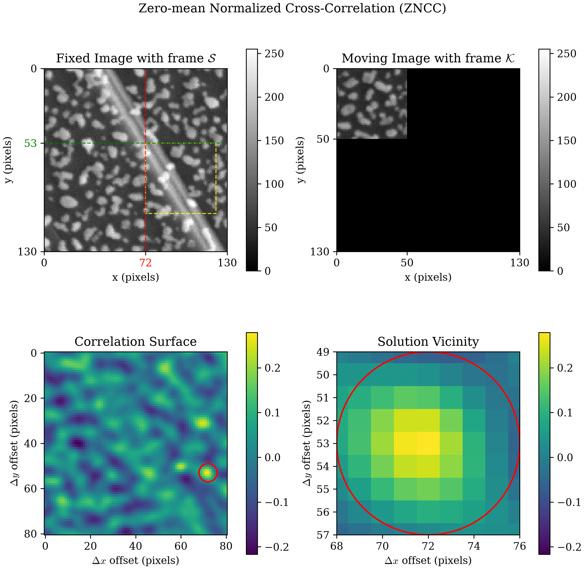
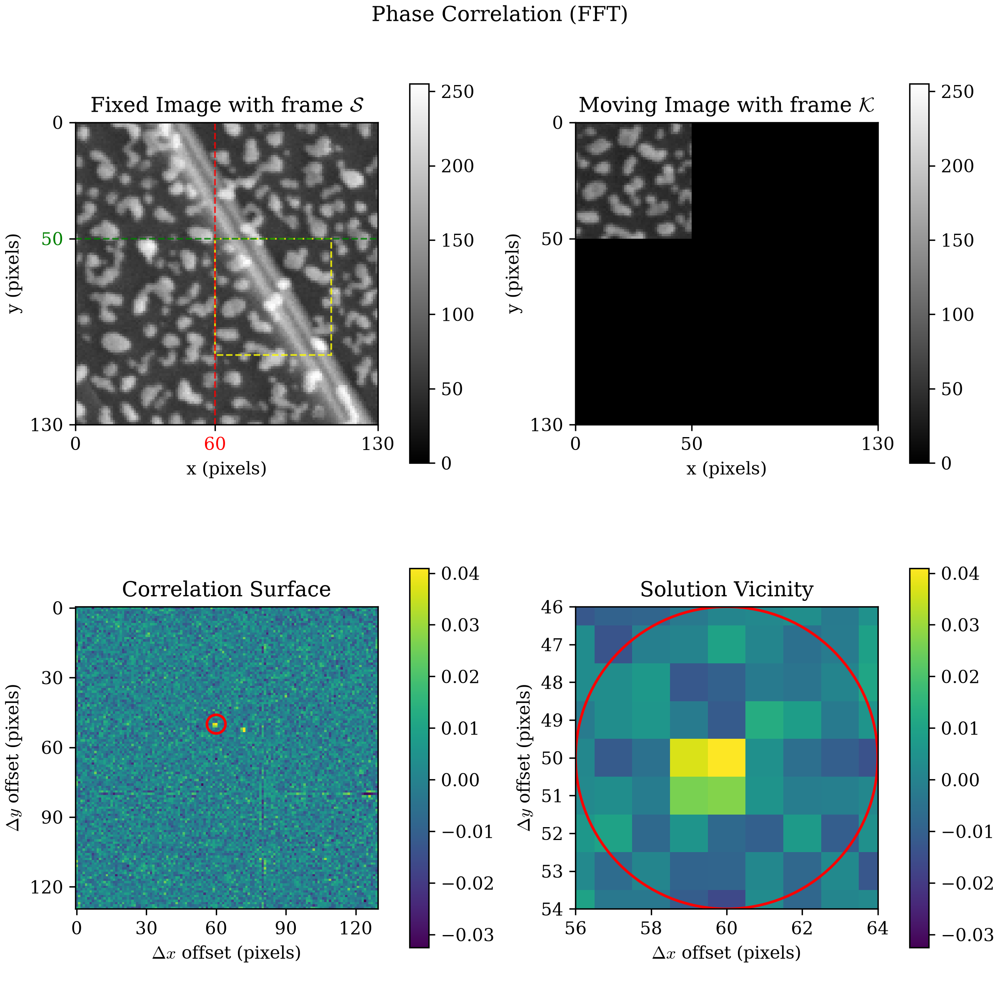

Experimental Dislocation
Synthetic Dislocation found a clean signature on a known ground truth: a straddling window's correlation surface shows two comparably-tall peaks, not one. A synthetic image is generous, though. It has no camera noise, no lighting variation, no unknown displacement field. This section repeats the same experiment on a real crack, to check whether the signature survives outside a synthetic setup.
Data Download
Both images below are real 512x512 experimental micrographs of a crack, included unmodified rather than generated by this book.
| File | Description | Size |
|---|---|---|
| experimental_dislocation_reference.tiff | Reference configuration, 512x512 pixels | 256 KB |
| experimental_dislocation_current.tiff | Deformed configuration, 512x512 pixels | 256 KB |
from dictk.image import read, write
reference_image = read(path="experimental_dislocation_reference.tiff")
current_image = read(path="experimental_dislocation_current.tiff")
write(arr=reference_image, path="experimental_dislocation_reference_preview.png")
write(arr=current_image, path="experimental_dislocation_current_preview.png")
Saved: experimental_dislocation_reference_preview.png, experimental_dislocation_current_preview.png
A Window Straddling the Real Crack
Unlike the synthetic case, the true displacement field here isn't known
in advance. It isn't purely vertical either: a real crack can open at
an angle, not just split into a clean up/down jump. Center a window
directly on the crack, at x=218, y=186, with kernel_margin=25 and
search_margin=65 (generous enough that the true match can't fall
outside the search area and get clipped):
from dictk.image import subimage, PixelCoordinate
from dictk.correlation import zncc
from dictk.plot import spatial_correlation_quadrant_plot, phase_correlation_quadrant_plot
p0 = PixelCoordinate(x=218, y=186)
kernel_margin, search_margin = 25, 65
kernel = subimage(
image=reference_image,
origin=PixelCoordinate(x=p0.x - kernel_margin, y=p0.y - kernel_margin),
width=2 * kernel_margin, height=2 * kernel_margin,
)
search = subimage(
image=current_image,
origin=PixelCoordinate(x=p0.x - search_margin, y=p0.y - search_margin),
width=2 * search_margin, height=2 * search_margin,
)
spatial_correlation_quadrant_plot(
kernel=kernel, search=search,
correlation_surface=zncc(kernel=kernel, search=search),
title="Zero-mean Normalized Cross-Correlation (ZNCC)",
path="experimental_dislocation_zncc.png",
)
Saved: experimental_dislocation_zncc.png, experimental_dislocation_phase.png

FFT on Real Texture: Noisier, Not Just Smaller
phase_correlation_quadrant_plot(
kernel=kernel, search=search,
title="Phase Correlation (FFT)",
path="experimental_dislocation_phase.png",
)

Both criteria agreed exactly on synthetic data. They don't here. Real,
non-periodic texture is exactly the case
phase_correlation's
own docstring already warns about: the raw FFT surface is far more
sensitive to noise than a spatial-domain criterion computed the same
window. ZNCC's two-peak signature is the one worth trusting on real
data. This evidence puts the FFT surface itself in doubt as a
diagnostic.
What Carries Over From the Synthetic Case
The core finding survives: a window straddling a real discontinuity still shows two comparably-tall peaks, not one, matching Synthetic Dislocation's result. What changes on real data is how cleanly the signature shows up. Here it's a bumpy, noisy background rather than a flat one, plus a real gap between the criteria that a synthetic, noise-free image can't reveal.
Discontinuities named the actual open problem: an algorithm that finds this signature on its own. Nothing here does that. Continue to Path Forward for where this leaves that item.
experimental_dislocation_quadrant.py
"""Plot the correlation surface a window straddling a real experimental
crack produces, ZNCC and FFT side by side. The two source images are
real experimental micrographs, copied in unmodified.
"""
from dictk.image import read, subimage, PixelCoordinate
from dictk.correlation import zncc
from dictk.plot import (
spatial_correlation_quadrant_plot,
phase_correlation_quadrant_plot,
)
KERNEL_MARGIN = 25
SEARCH_MARGIN = 65
reference_image = read(path="experimental_dislocation_reference.tiff")
current_image = read(path="experimental_dislocation_current.tiff")
p0 = PixelCoordinate(x=218, y=186)
kernel = subimage(
image=reference_image,
origin=PixelCoordinate(x=p0.x - KERNEL_MARGIN, y=p0.y - KERNEL_MARGIN),
width=2 * KERNEL_MARGIN,
height=2 * KERNEL_MARGIN,
)
search = subimage(
image=current_image,
origin=PixelCoordinate(x=p0.x - SEARCH_MARGIN, y=p0.y - SEARCH_MARGIN),
width=2 * SEARCH_MARGIN,
height=2 * SEARCH_MARGIN,
)
spatial_correlation_quadrant_plot(
kernel=kernel,
search=search,
correlation_surface=zncc(kernel=kernel, search=search),
title="Zero-mean Normalized Cross-Correlation (ZNCC)",
path="experimental_dislocation_zncc.png",
)
phase_correlation_quadrant_plot(
kernel=kernel,
search=search,
title="Phase Correlation (FFT)",
path="experimental_dislocation_phase.png",
)
print("Saved: experimental_dislocation_zncc.png, experimental_dislocation_phase.png")